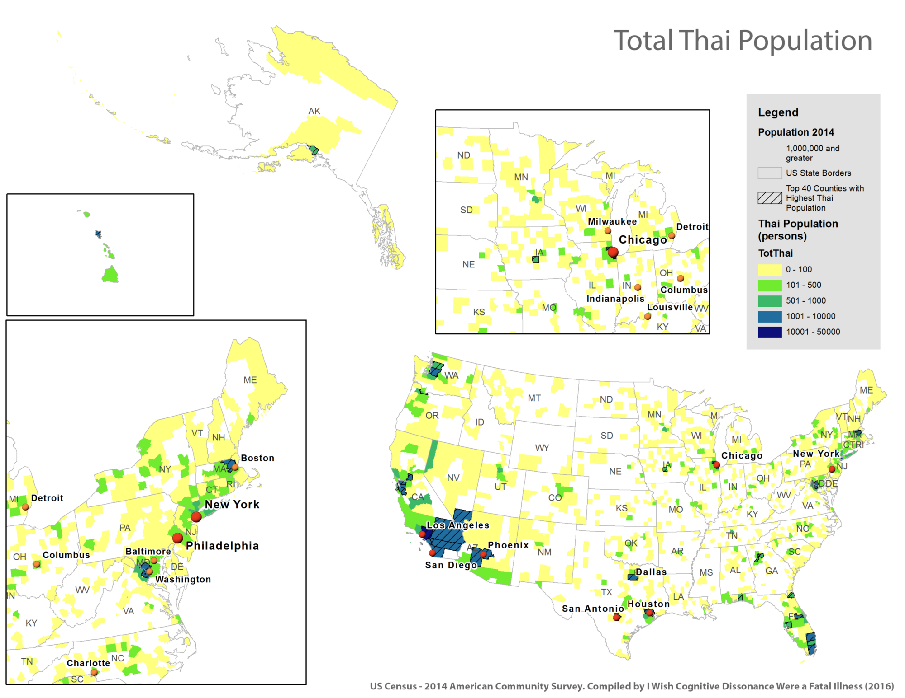

Sample project
Attention Thai people. Don’t you hate it when you go abroad to work or study but end up running into the same old people you see every day? We have a solution.
For the better or for worse, Thai students — exchange, college and graduate alike — and workers will somehow find themselves in a Thai community almost as soon as they arrive. And a few Thai food potluck parties and badminton sessions later, they will realize that they have come to live in Little Thailand instead of the United States of America. With only around 300,000 Thai people said to be living in the US — barely 0.1% of the total US population, it is quite remarkable how this predicament has plagued our compatriots for generations. With the help of US Census and GIS, we hope to end this ordeal once and for all.
First, we opt for the most simple and stupid strategy: avoid places with the highest number of Thai people. We explore the raw head count of Thai people in each county across the US. The population distribution appears almost equivalent to the
US population distribution. As expected, more Thai people tend to live in major US cities especially Asian sweetheart cities like Los Angeles and Honolulu.

My work here is done. *Flies away*
But not so fast. Statistically educated readers will point out the fact that the map of total Thai population might only demonstrate the fact that there are more Thai people in counties with a higher number of population. This is a fair point.
That is why in order to calculate the real chance of running into Thai people in certain counties, we offer a couple of alternative measures.
The first method has a simple yet powerful rationale: in any given US county, we take a random person and determine how likely it is for them to be Thai. This is done by dividing the number of Thai people by the total population.
Once applied, traditionally more Asian cities like Los Angeles and Honolulu still stand out as having high chance of running into a Thai person yet other simply populous cities like New York City now have a much lower chance.
Moreover, middle-of-nowhere places like Nebraska, non-Vegas Nevada, and Alaska have become more popular.
Taking a random person performs quite well if we assume a uniform population density across county. However, that is not the case: some counties could be more or less crowded than others, and that interferes with our intepretation of
taking a random person as chance of meeting a Thai. For instance, if you live in Queens county, New York, even if you do not move around a lot you are likely to meet more people than if you live in Cheyenne, Nebraska simply because there
are more people per square meter in your county.
In order to be even more precise, we take a different approach: assume that we let a person parachute into a random location in any given county, let him walk until he meets the first person, then calculate the chance of that first
person being Thai. This is accomplished by dividing the Thai population by total population and the area in square meters. The result naturally favors smaller counties on the East Coast and in the Midwest. We think this is the most intuitive
and rationally sound way to gauge the chance of meeting a Thai person in the US. Note that an important limitation of this map is that Thai population might be concentrated in certain parts of a county, and could distort our presented probability.
The last remaining doubt about the chance of running into Thai people in the US is that the map above might just display the chance of running into an Asian. If you are okay with running into Asians but specifically want to avoid Thai,
we provide the following map and suggestions. In terms of raw number of population, only a hundred or so of Thai live in Midwestern and New England counties. However, the percentage of Thai to Asian population is quite impressive at 5.5–10%.
Some Thai may be a little bit into cold weather and snow.
If You Must, Hang Out with Those from the Suburbs
Even if we have a comprehensive map of chances of finding a Thai person in each county, sometimes you cannot have no choice. No one is going to trade a high paid job in Chicago for potato farming in Idaho just to avoid their fellow countrypeople.
Our advice is that if you must mingle with Thai, choose those who live in the suburb to maximize your American experience. The following map shows the percentage of Thai population who speak English very well in each county. Our debatable logic is
that those who speak better English would be those who have assimilated better and thus are less likely to be afflicted by Little Thailand syndrome.
English speaking competency is not related to which part of the US you are living in, but to which part of a city. Those who live in the suburb are much more likely to be more proficient in English than those who live downtown.
We try to dig deeper and see what else might influence the English proficiency of Thai people in the US. One hypothesis is that good colleges might attract Thai who speak better English. In the map below, purple triangles denote
the top 100 college in the US. We can see that 25% of Thais speak English very well if they live next to US top colleges. However, it does not mean that the better school will always have more English-speaking Thai. A lot of counties
without top colleges speak English better than college towns. Hundred percent of Thais in the middle of nowhere like Wasatch Utah and Shawano, Wisconsin can kill English.
When we talk about top colleges, we cannot resist the urge to mention the Ivies. Big cities like Boston and New York City aside, we would expect almost every Thai in super college towns like New Haven, Ithaca, Hanover, and Providence to
be students of Ivy League universities. Therefore, it is quite surprising that those who live near UPenn and Yale speak worse English than those who live in their suburbs.
We have extensively investigated ways to avoid Thai people in the US based on the assumption that associating yourself with them will ruin the experience of your study or work abroad. But how robust are these preconceptions — myths rather. To find out, we went back to the US Census and used to data to perform proportional z-tests on characteristics of Thai population in the US and the general US population. This will tell us how different they are from an average American, aka if Little Thailand syndrome really exists.
One of the strongest stereotypes about Thai people, and perhaps immigrants overall reinforced by a certain looney-tunesque character of a presidential candidate, is that they are lazy welfare cheaters who simply came to sit around waiting
to be naturalized. However, if lazy means unemployed, then statistics significantly disagrees with the premise (pun intended). The difference between percentage of Thai people and the general US population in the workforce is almost negligible.
Approximately 65% of Thai people in the US are employed as compared to 63% of the US population. Therefore, the first myth is debunked; Thai people came to the US to work, at least as often times or more than the next American.
But what types of work do they do? Another widespread preconception is that Thai people come to open Thai restaurants because obviously you can charge $30 for a mediocre Pad Thai that nobody would know is nothing like the authentic
version (Fun fact: Pad Thai is actually NOT a traditional Thai dish per se; it was invented during a nationalist government to reinforce ‘Thai-ness’). In order to verify the claim, we first look at the difference in types of occupation.
Thai people in the US are about 10% more likely to be in the service industry. This reinforces our myth.
When we dig deeper into the industry in which Thai people work in, we found that they are 15% more likely to be in Arts, Entertainment & Food, which almost cries out Thai restaurant owners at an overwhelming statistical significance. It is true
that without a comprehensive survey, there is no way, much of this remains a guesswork; for instance, a lot of them might be artists or performers instead of food workers. But since it is highly unlikely anyone would care about enough about
Thai people in the US to do this very specific study on some 300,000 people of minority population (not to mention the oh-so-mighty Thai government whose stats bureau provides census data in pdf), we make the figurative leap of faith here
and ‘confirm’ that many a Thai person indeed come to the US to open Thai restaurants.
Mia Farang, literally wife of a (white) westerner, is a well-known derogatory term used to describe low-income Thai women from the rural area, most likely former prostitutes, who are preferred as exotic items by and thus married to white
westerners (farang in Thai). The premise is that a lot of Thai female in the US are Mia Farang. The 7% difference in percentage of female population who are married between Thai and the general population might make us want to jump to conclusion
and confirm the stereotype. Nonetheless, the limitation of our study means that Thai female might just tend to get married more than the general US population and not necessarily with a white male.
We took another angle and look at the difference between naturalization of Thai and the general US population. If Thai female tends to get married more (as we already confirmed) and also naturalized more, the Mia Farang hypothesis might be
more viable. We saw that indeed Thai female are about 10% more likely than the general US population to be naturalized but this is most likely simply because there are also higher percentage of Thai female in the US than the general US population.
Unfortunately with the evidence, we have it is difficult to either debunk or confirm the Thai gold digger myth.
The next popular myth is that Thai people in the US are living la vida loca in the land of opportunities. They supposedly have big houses and send tons of money to their relatives back home in Thailand. According to the US census,
most of them, more precisely about 60% of them, still live in one-unit housing, but we did found that Thai people in the US are actually about 15% more likely to occupy 5 or more units of housing. So yes and no for this one.
To be honest, this last myth might be too much of a stretch to prove with census data. It goes like this: a lot of Thai people who came to the US fail to assimilate and end up retreating to the comfort of the Internet, facebooking with friends
and family back home being their only day-to-day human interactions. We tried to look at the difference in household broadbrand subscription and computer ownership to make the inference. Thai people households in the US are indeed more likely
to have a broadbrand subscription and a computer; however, there are many more possiblities beside Internet addiction and anti-social behaviors. For instance, the people might simply be more tech savvy than the general US population.
Again, this one is inconclusive.
We denied the stereotype that Thai people are lazy, confirmed that a lot of them come to open or work in Thai restaurants in the US and are more likely to live in big houses than the general US population. However, we can neither confirm
or deny they are gold diggers or are more likely to have broadbrand subscription due to homesickness.
In the end, some of what has been said about Thai people in the US are true; some are false and some difficult to confirm. The decision is yours to look at the data and determine whether to buy into the stereotypes of Thai people in the US.
They might not be as bad as people said, but if they are, we have already provided you with ways to escape them.
For mapping, we use the 2010–2014 American Community Survey 5-Year Estimates (Table DP05, B02006 and B16001) obtained from the US Census. We decided to use county as our geographical boundary since its size and population remain somewhat big somewhat) the same across the country, and thus is most suitable for comparison. For the proportional z-tests, we used the 2014 American Community Survey 1-Year Estimates (Table S0201).s